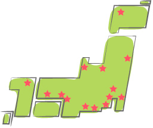

| 試験日 | 第41回 2019年7月14日(日) |
|---|---|
| 願書請求期間 （申込登録期間） |
2019年3月1日（金）～5月17日（金）17：00まで |
| 願書受付期間 （受験料払込期間） |
2019年4月1日（月）～5月31日（金） |
| 願書受付締切日 （払込期限日） |
2019年5月31日（金） |
| 受験票発送 | 2019年7月4日（木）到着予定 |
| 受験票 未着問合せ期間 |
2019年7月8日（月）～9日（火） 9：00～17：00 |
| 合否通知発送 | 2019年8月5日（月） |
| 合否通知 未着問合せ期間 |
2019年8月19日（月）～20日（火） 9：00～17：00 |
| 試験日 | 第42回 2019年11月24日(日) |
|---|---|
| 願書請求期間 （申込登録期間） |
2019年7月18日（木）～9月27日（金）17：00まで |
| 願書受付期間 （受験料払込期間） |
2019年9月2日（月）～10月11日（金） |
| 願書受付締切日 （払込期限日） |
2019年10月11日（金） |
| 受験票発送 | 2019年11月14日（木）到着予定 |
| 受験票 未着問合せ期間 |
2019年11月18日（月）～19日（火） 9：00～17：00 |
| 合否通知発送 | 2019年12月20日（金） |
| 合否通知 未着問合せ期間 |
2020年1月8日（水）～9日（木） 9:00～17：00 |
※詳細は各回の受験案内（願書）をご確認ください。
受験の制限はありません。
食生活に興味のある方ならどなたでも受験できます。
- （2018年第40回実施会場）
- 札幌：北海道建設会館
- 仙台：学校法人 北杜学園
- さいたま：TKP大宮ビジネスセンター
- 千葉：千葉経済大学 短期大学部
- 東京：AP西新宿
- 横浜：TKPガーデンシティ横浜
- 新潟：新潟ユニゾンプラザ
- 金沢：金沢勤労者プラザ
- 静岡：CSA貸会議室
- 名古屋：TKP名駅桜通口カンファレンスセンター
- 大阪：TKPガーデンシティPREMIUM心斎橋
- 神戸：神戸ファッションマート
- 広島：広島YMCA国際文化センター
- 福岡：KCS福岡情報専門学校

- 注意
- 試験会場は増加や変更になる場合があります。
なお、会場への直接のお問い合せは、ご遠慮ください。
-
3級：10時30分 2級：13時30分
-
3級・2級ともに90分
3級 4,700円
2級 7,300円
3級・2級併願 12,000円
-
- 栄養と健康
（栄養・病気予防・ダイエット・運動・休養など) - 食文化と食習慣
（行事食・旬・マナー・配膳・調理・献立など） - 食品学
（生鮮食品・加工食品・食品表示・食品添加物など）
- 栄養と健康
-
- 衛生管理
（食中毒・食品衛生・予防・食品化学・安全性など） - 食マーケット
（流通・外食・中食・メニューメイキング・食品販売など） - 社会生活
（消費経済・生活環境・消費者問題・IT社会・関連法規など)
- 衛生管理
-
- 3級理論問題：
・選択問題（マークシート形式） - 2級理論問題：
・選択問題（マークシート形式）
・記述式問題
- 3級理論問題：
-
3級：1問2点 合格点60点以上
（100点満点）
2級：選択問題1問2点・記述問題1問3点
合格点74点以上
（123点満点）